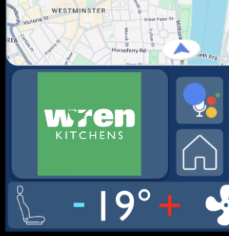

Advertising is a significant part of the TOL business model, as it enables lower prices for same (or more) equipment, quality and premium experience. This guide is for brands interested in joining the growing number of companies developing the 'Personalised driving experience'. For thorough understanding of the customer side, it is recommended that the 'Advertising' step of car customisation is explored. It addresses safety and other concerns one may have.
each type involves different amounts of data, real estate and is priced accordingly
Brand jingle can become a part of the cars' users every time they
visit a location, turn the car on or off.
Perfect for strong brand recognition. A simple way of creating
cravings in your customers as they turn their car off, having come
back from work.
Simultaneously, as electric vehicles are required to emit noise at low speeds, your brand can be played on the exterior.
The TOL infotainment system has a designated place for advertising
within its infotainment system. This part of the screen stays on for
90% of the time and is an opportunity to present a strong visual
image.
Perfect for strong brand recognition. A simple way of creating
cravings in your customers as they turn their car off, having came
back from work.
Considering the context, only short text or logo is allowed as
drivers shall not get distracted in long copy, which would hurt
the brand inevitably, as well.
The system always returns to the home screen after 15 seconds of inactivity to ensure offers are visible.

Integrating both visual and audio clues can significantly increase
brand recall, recognition and entice customers in products.
In this case, 'Visual & audio' consists of a 'Visual only' imagery
with a radio-advertising-style audio played at designated frequency.
Audio-visual content (videos or any other moving imagery) is not allowed and will not be accepted by the system
all cases are assessed individually
TOL vehicles are equipped with a plethora of systems and sensors
which can provide helpful information & additional touch-points
available for branding.
This enables brands to stay on the mains of their consumers all the
time or give them the needed push when they may need it, such as
offering discount at a nearby cafe, when signs of fatigue are
detected.
While all advertising utilises the TOL mobile app notifications for saved offers, Deeper integration on the Network level opens the list of options further.
each type offers different interaction and connection to integration options
Ideal for retailers with many branches and locations or local small businesses. Give exclusive offers or remind of existing ones with the option to redirect to your location.
Roads with frequent accidents and dangerous overtaking can trigger a reminder the driver might miss in the form of a sign. It allows for an additional layer of awareness. It can also provide safety information live on top of the navigation system.
Available for all offers, including local promotions. This type of messaging is perfect for brands that mostly operate online and want to provide special offers to TOL drivers, who get to save their promotions and then take advantage of it once they have exited the car. All offers can take advantage of the data and electronic trails, depending on the level of integration chosen by the customer and the integration type.
If you know your brand is something a particular driver is hooked on,
the 'Buy NOW' feature allows the consumer to instantly buy a specific
product from your offer.
This function is not widely available as it is in its trial phase,
however the results have been promising so far. If you would like to
participate in this trial, please contact us (business@TOL.co.uk).
Please note the core requirements before applying.
Services are only available on 'Deeper integration' levels, especially in the 'Network' sphere. Services are developed based on extensive data collected about individual users and aim to tailor their experience with their TOL vehicle as close as possible, with the help of their favourite brands. Brands, therefore, can associate themselves with positive experiences and simplification of the customers' lives.
Services include, but are not limited to:
Due to the variety in integration and media outputs, each case is assessed individually until a more robust framework is developed. Some cases and functionality are listed below for illustration purposes:
The TOL infotainment is built on the Android Automotive platform, hence it does not support Android Auto. Apple CarPlay is supported and the advertising feature is not disrupted.